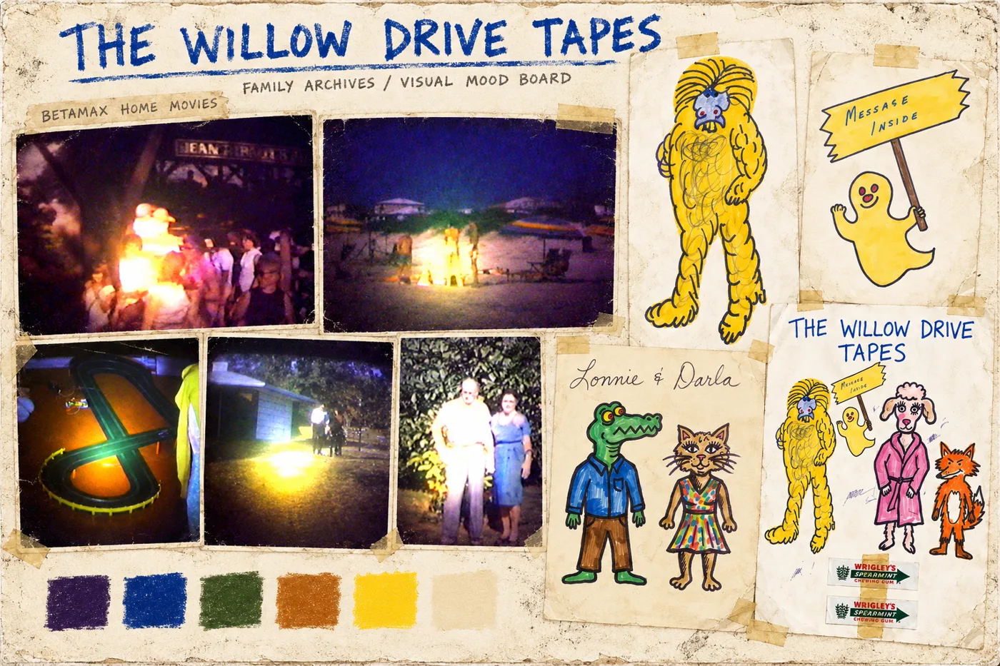
About the series
After Gordon Vale was imprisoned for killing his wife, Miriam, he wrote letters and made illustrated cards for their daughter. He filled them with strange cartoon creatures, bright colors, crooked smiles, and personal handwritten messages. Those drawings carry a painful history: they were created by her father in prison after he had killed her mother.
The characters in this retelling come from that correspondence. The environments come from the family’s own Betamax home movies. The visual style was trained on material from the family archives, bringing together the father’s drawings and the places the family recorded themselves inhabiting. The worn backgrounds, imperfect framing, unstable colors, and soft analog textures belong to their recorded history.
Together, these materials give the story its distinctive appearance. The cartoon figures from the prison letters inhabit a world drawn from the family’s home movies, connecting the father’s correspondence after the murder with the family’s life before it. Beneath the handmade shapes and faded videotape imagery are real relationships, memories, and loss.
The narrative follows the years leading to Miriam’s death: a marriage breaking apart, a dispute over money and property, and Gordon’s increasingly threatening behavior. While Miriam tries to maintain a stable home for her children, Gordon approaches acquaintances about killing her and others he believes have wronged him. Familiar household routines become the very details he describes when discussing how someone could reach her alone.
The story remains with those events, ending on the afternoon Miriam’s youngest son returns from school, discovers his mother’s body, and runs toward a neighbor’s house to get help. The final image is the boy still running.
Synopsis
Gordon Vale makes illustrated cards for his daughter. His drawings are full of peculiar cartoon creatures, bright colors, crooked smiles, and handwritten messages. Those characters become the inhabitants of this retelling, carrying the lives of a real family through a world of handmade surroundings, dim rooms, and faded home-video color. Behind their cheerful, awkward appearances is a story of a family becoming afraid of its own father.
For years, Gordon’s success as a property developer has given his family a comfortable life. He and his wife, Miriam, have four children and a large home outside a small North Carolina town. From a distance, they appear to have everything. Inside the marriage, resentment and intimidation have worn away that appearance.
When they separate, Miriam stays in the family home with their two young sons. An adult daughter also returns to live with them. Gordon moves into a nearby trailer, but the separation gives Miriam little peace. She initially asks him to come home, hoping they can restore their family. He rejects her. When she asks for her share of their money and property, his anger intensifies.
Miriam continues making breakfast, getting the boys ready for school, and keeping the house running. Around those familiar routines, her fear grows. Gordon threatens her, humiliates her, and becomes physically aggressive. Their children witness his cruelty. Relatives recognize how frightened Miriam has become, and her brother-in-law confronts Gordon about threatening her life.
Meanwhile, Gordon becomes involved with Celia Mercer, a woman who has also separated from her husband. When Celia’s estranged husband, Warren, kills her, Gordon becomes consumed by revenge. He threatens Warren and accuses Miriam of exposing the affair. In his mind, his wife, her attorney, and Warren become people standing between him and the life he believes he deserves.
He begins asking acquaintances whether they know someone willing to kill.
The requests emerge in ordinary places: an office, a car lot, a trailer, a parked car. People who know Gordon through business or casual connections suddenly find themselves listening to offers of money for murder. He talks about killing Miriam, her attorney, and Warren. Some refuse him outright. Others realize gradually that he is serious. One man warns the attorney’s family.
Gordon describes the house where his children live. He discusses when they leave for school, when Miriam will be alone, and how someone could approach through the woods or enter through a rear door. He shows acquaintances ways into the property and demonstrates that he still has access to the garage.
While he explains these routines to other men, Miriam continues living them.
The illustrated cards remain part of the family’s world: small, personal objects made by the same father whose behavior has become increasingly frightening. Their strange, colorful creatures give this telling its faces. The surrounding world feels worn and tangible, with painted surfaces, mismatched furniture, shadowed hallways, and harsh pools of yellow or greenish light. Everything has the softness and instability of an old videotape, as though a family memory has survived in damaged fragments.
On the morning of September 15, 1975, Miriam wakes her daughter for work. She checks her watch and prepares breakfast for her sons. Before her youngest boy leaves to catch the school bus, she kisses him goodbye.
The children leave. The house becomes quiet.
Sometime that morning, Miriam is fatally attacked in her youngest son’s bedroom. The precise circumstances of those final moments remain uncertain.
That afternoon, her eleven-year-old son comes home from school. He looks for his mother and finds her lying on his bed. He realizes something is terribly wrong.
He runs out of the house toward a neighbor’s home to get help.
The story ends with the boy still running.
The drawings
These are the father’s drawings, from the letters and cards he made for his daughter. They are the faces of the series, and they sit against the family’s Betamax home-movie footage.

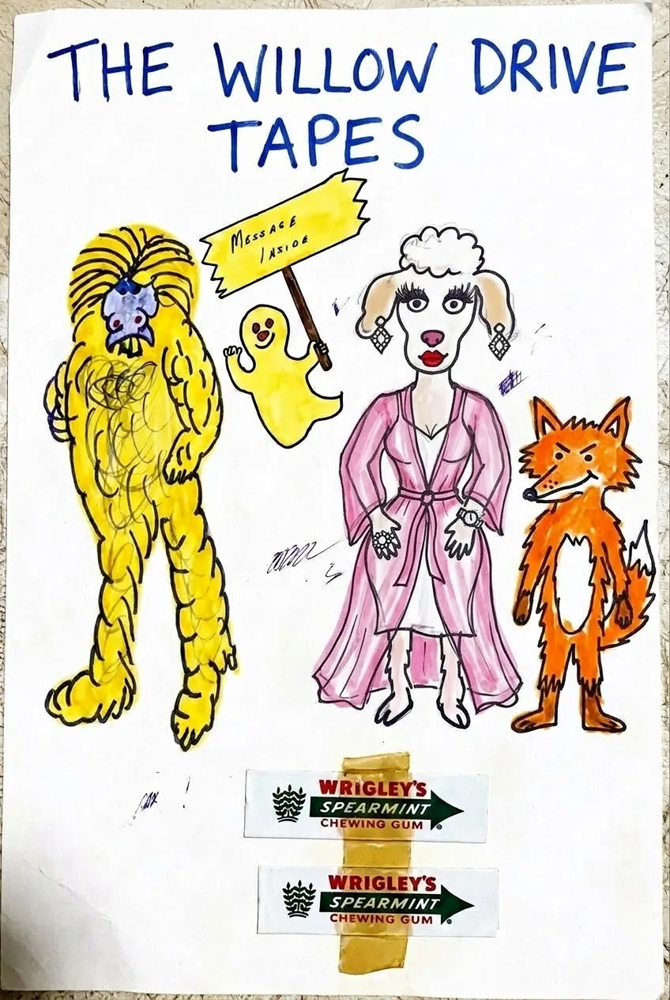

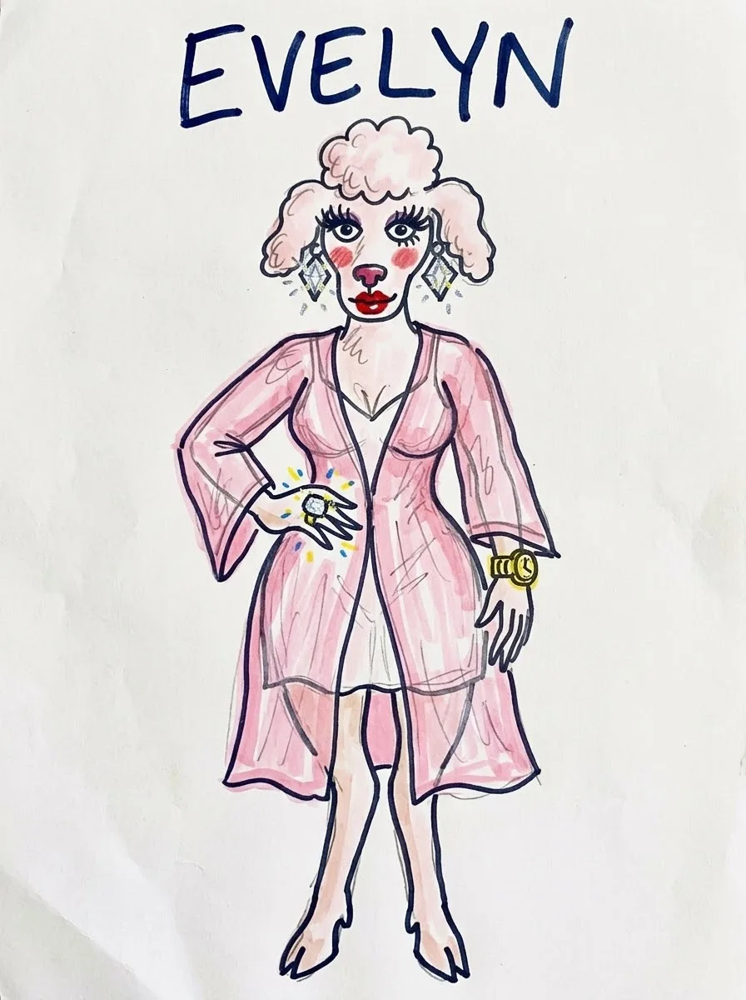

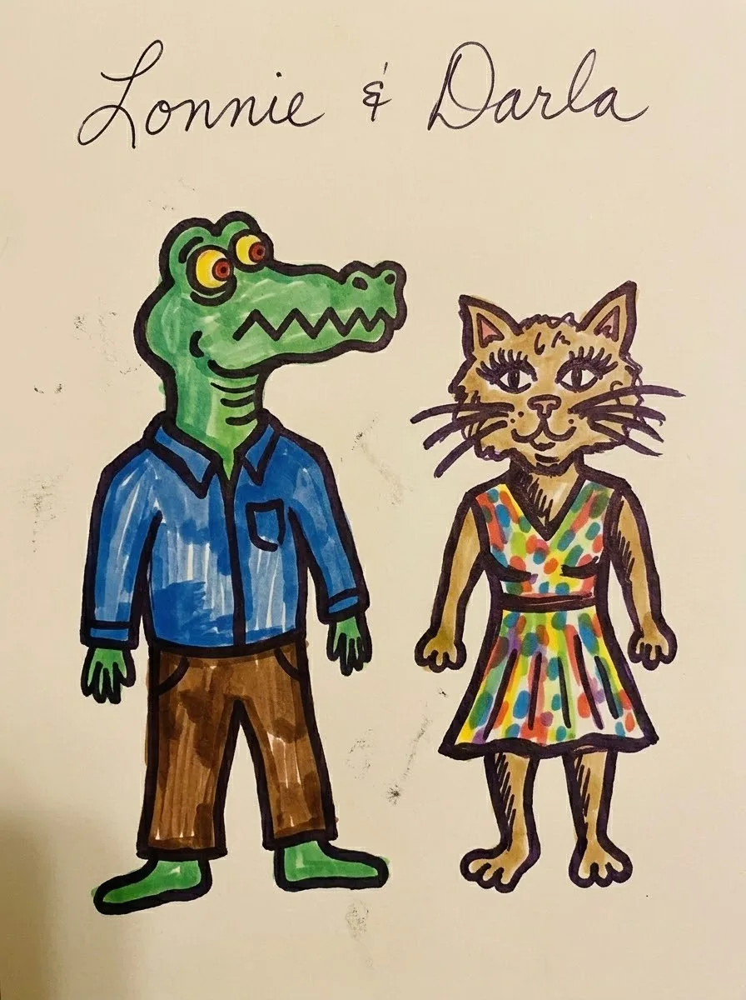

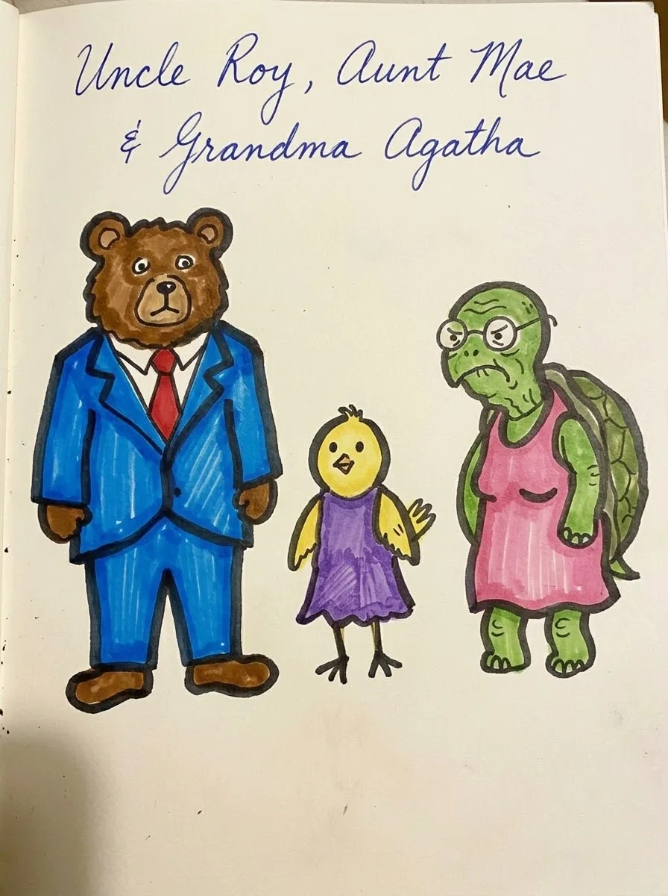

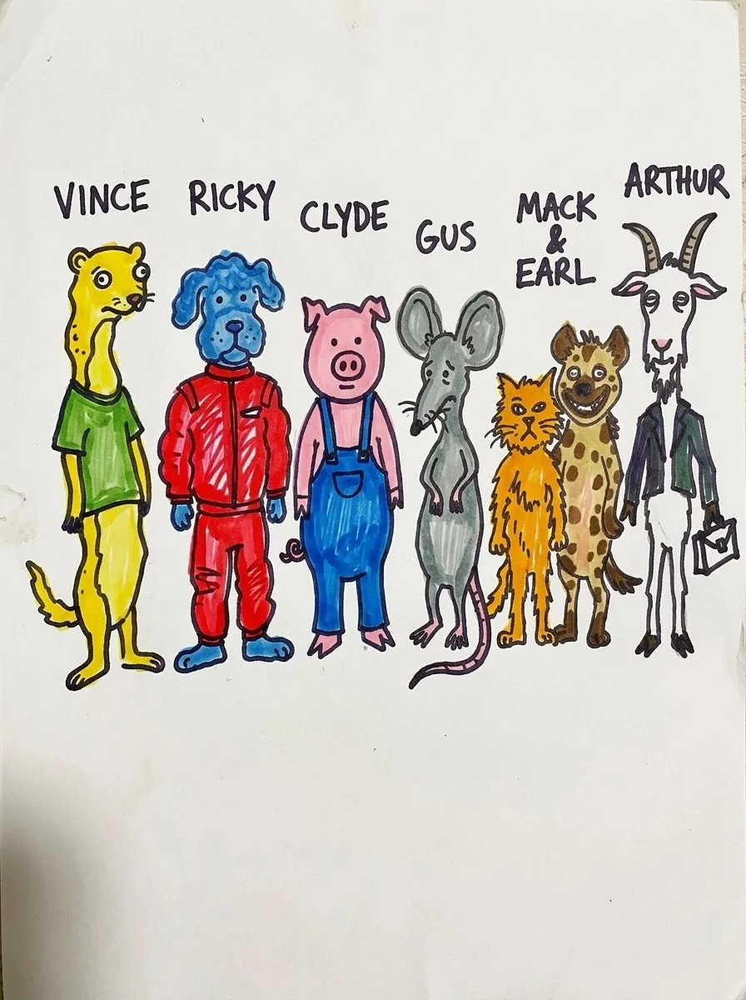

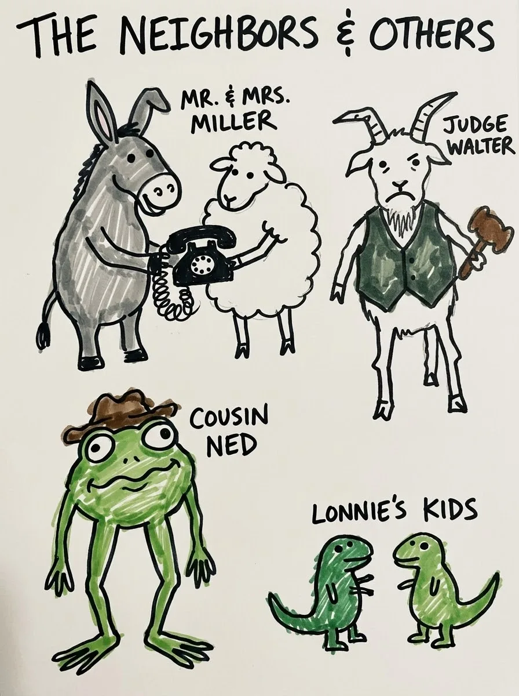

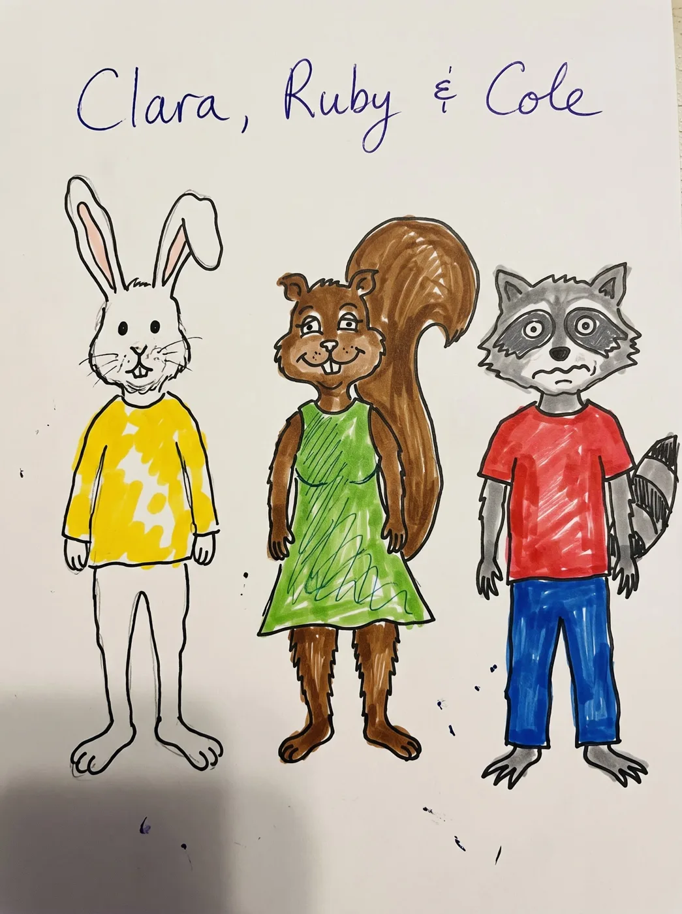

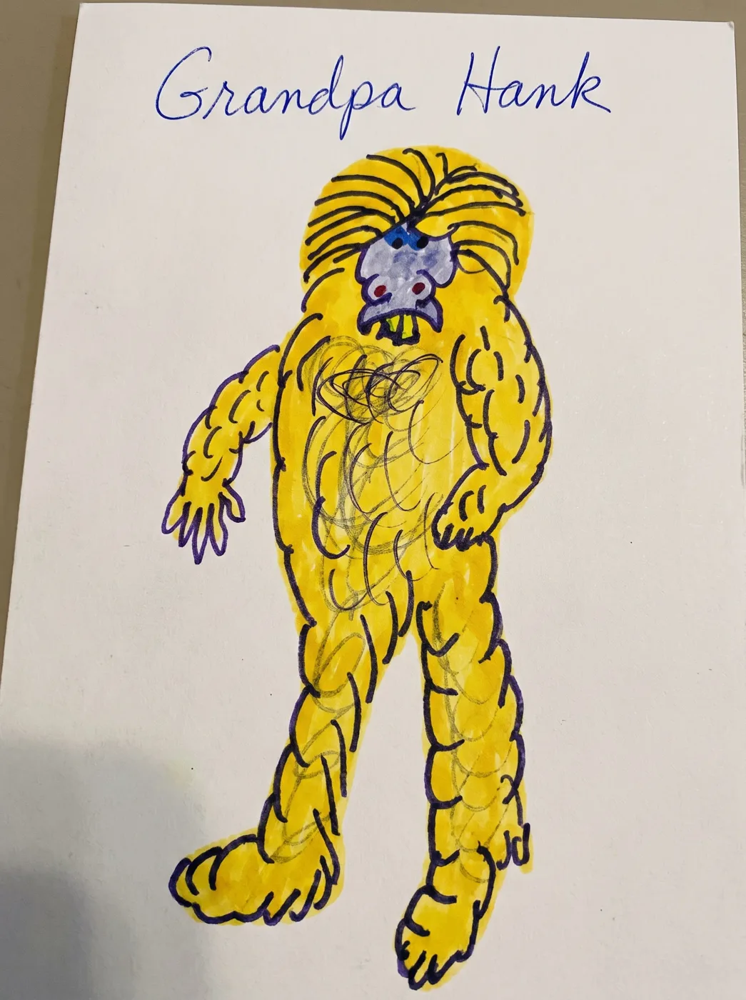

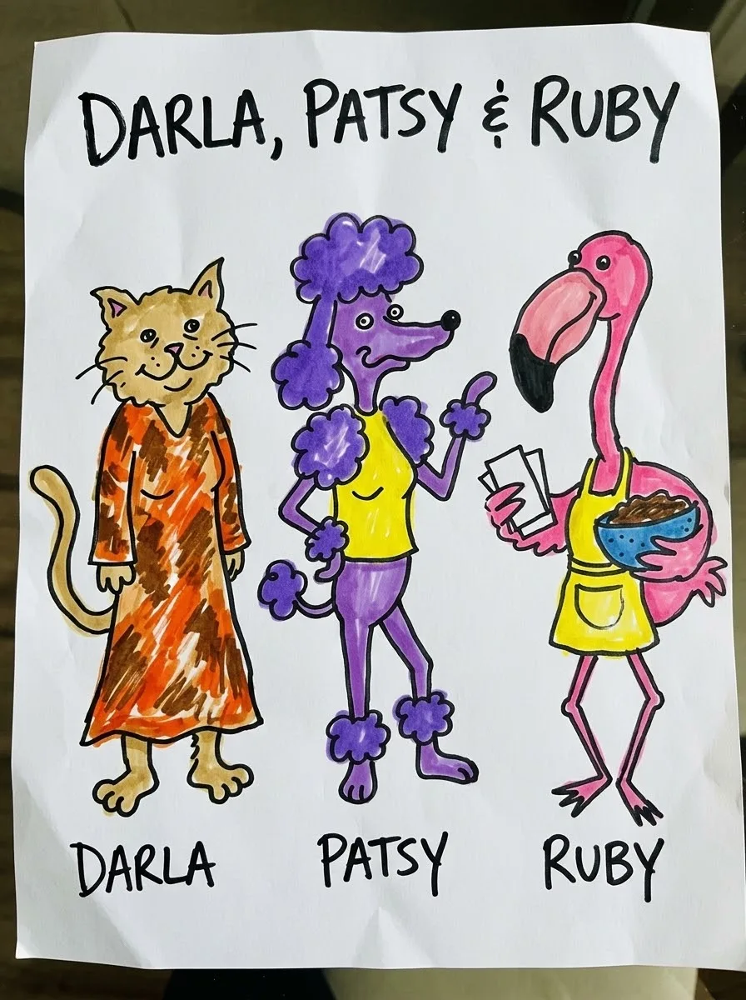

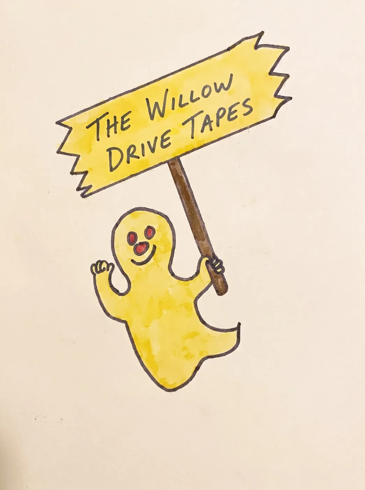

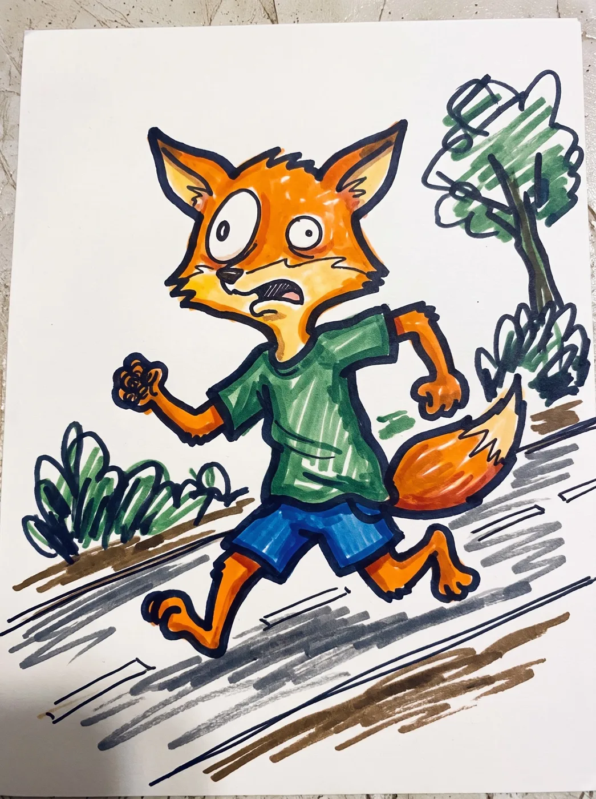